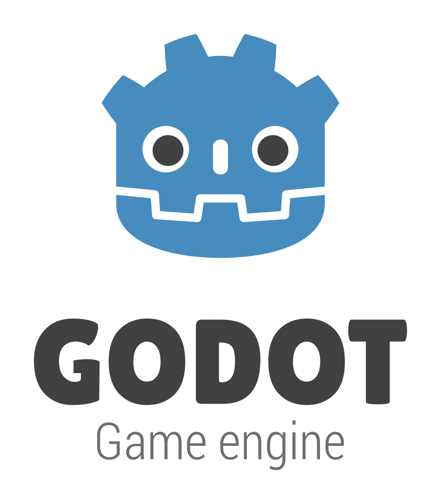

Lemulogic
Desarrollo de un laboratorio virtual interactivo para la enseñanza de ciclos repetitivos en programación en los primeros semestres de Ingeniería de Sistemas
Harrizon Alexander Soler Galindo
Director: Juan Francisco Mendoza Moreno PhD
Desarrollo Tecnológico
Ingeniería de Sistemas
- Escasa motivación
- Actividades pobremente diseñadas
- Deserción académica
- Disparidad entre modalidades
- Facilitar la comprensión y aplicación de ciclos repetitivos
- Diseñar una aplicación de navegador accesible y entretenida
- Evaluar el impacto del laboratorio virtual

| Rol | Asignación |
|---|---|
| Desarrollador, Tester | Harrizon Soler |
| Coach, Cliente | Tutores |




50 estudiantes
Pre-test
Laboratorio
Post-test
Formulario

\[\begin{aligned}
t(10) & = 4.124 \\
\alpha & = 0.95 \\
4.124 & > 1.812
\end{aligned} \]
| Pregunta | Calificación |
|---|---|
| Intuitividad | 4.4 / 5 |
| Efectividad | 4.2 / 5 |
| Adherencia | 4.3 / 5 |
| Posibles funcionalidades | Función deshacer y tutoriales integrados que expliquen el uso del aplicativo principalmente. |
| Posibles temáticas | Entornos 3D, Rompecabezas, Música y Laberintos |
| Posibles conceptos | Estructuras de datos, funciones y mas interfaces de control |
Conclusiones
- Nivel de satisfacción general
- Impacto positivo en comprensión
- Plan de mejora